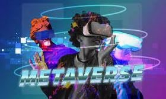

Metaverso
El metaverso es un concepto de un universo 3D persistente en línea que combina múltiples espacios virtuales diferentes. Puedes pensar en esto como una versión futura del Internet. El metaverso permitirá a los usuarios trabajar, reunirse, jugar y socializar juntos en estos espacios 3D.
El metaverso no existe del todo, pero algunas plataformas contienen elementos similares a los de un metaverso. Los videojuegos ofrecen actualmente la experiencia de metaverso más cercana que existe. Los desarrolladores han superado los límites de lo que es un juego mediante la organización de eventos dentro del juego y la creación de economías virtuales.
